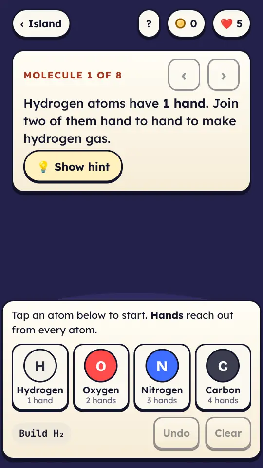

All labs › Chemistry › Atom Snap
Chemistry lab · Amma Jaya's Kitchen
Atom Snap
परमाणु जोड़ो · परमाणु जोड़कर अणु बनाओ
Snap atoms together to build simple molecules such as water, oxygen and carbon dioxide. Each atom shows how many hands it has to hold.
- Chemistry
- Tinkerer · ages 7–10
- 8 levels
- English · हिंदी
- Free, no sign-up

How it works
Build water, H₂O
- Oxygen has 2 hands and hydrogen has 1.
- Tap Oxygen, then Hydrogen twice.
- Every hand is holding another hand, so the molecule is finished: H₂O.
Stuck? Every level has a hint, and a "Show me" walk-through.
Why it works
The big idea
Atoms are like friends who hold hands: hydrogen has one hand, oxygen two and carbon four. A molecule is finished when every hand is holding another.
What children learn
Skills in this lab
- Everything is made of atoms
- Simple molecules like H₂O and CO₂
- Each kind of atom makes a set number of bonds
For parents and teachers
This lab is in the Tinkerer band (ages 7–10). Each player picks a band, and sees only the labs made for it.
Curio Island is free in the browser with no sign-up. Progress is saved on this device only. Ads are child-safe and non-personalised, and never appear inside a lab.
Part of Amma Jaya's Kitchen on the island. 8 levels to finish.